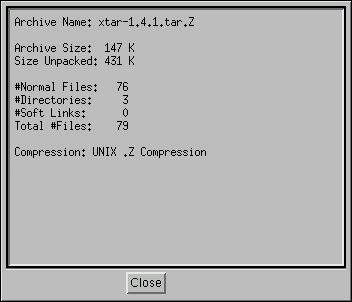

XTar - Statistics Viewer

The statics viewer, accessed from the XTar pulldown menu, displays information about the contents of the archive:
Archive Name, is the filename of the currently open archive.
Archive Size, is
the size of the archive filename.
Size Unpacked, is the size of the archive when
it is extracted.
#Normal Files, is
the total number of standard UNIX files in the archive.
#Directories, is the total number of directories
in the archive.
#Soft Links, is the total number of softlinked
files in the archive.
Total #Files, is the total number of files and
directories in the archive.
Compress, indicates the type of compression used, if any.
Go back to the index or on to Hypertext Help.